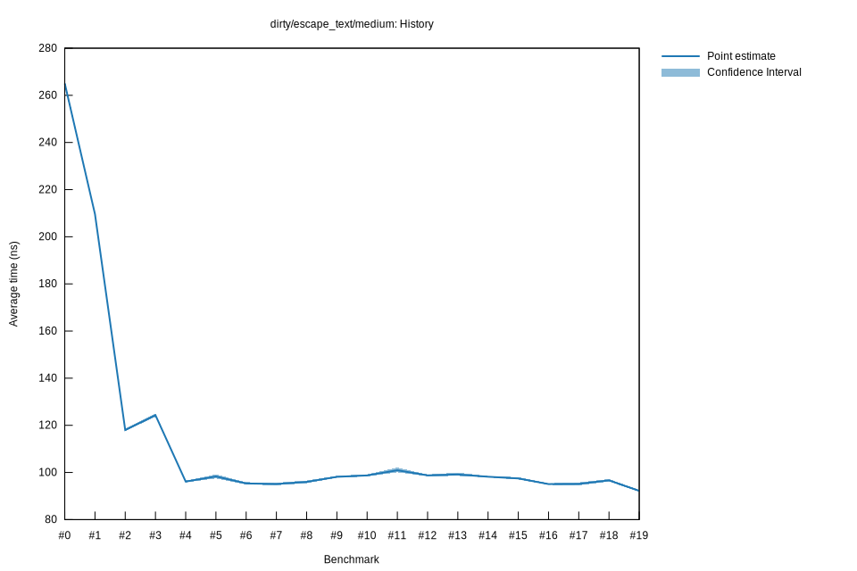

# 172023-02-03T23:02:36-08:00
|
Lower Bound |
Estimate |
Upper Bound |
| Value: |
94.56ns |
95.14ns |
95.78ns |
| Throughput: |
1240.45MiB/s |
1232.97MiB/s |
1224.66MiB/s |
| Change in Value: |
-1.7024% |
-0.6908% |
+0.4095% |
| Change in Throughput: |
+1.7319% |
+0.6956% |
-0.4078% |
Change within noise threshold.
# 162023-01-31T06:02:58-08:00
|
Lower Bound |
Estimate |
Upper Bound |
| Value: |
94.75ns |
95.07ns |
95.40ns |
| Throughput: |
1238.02MiB/s |
1233.83MiB/s |
1229.53MiB/s |
| Change in Value: |
-2.8830% |
-2.0167% |
-1.0547% |
| Change in Throughput: |
+2.9686% |
+2.0582% |
+1.0659% |
No change in performance detected.
# 152023-01-21T07:25:09-08:00
|
Lower Bound |
Estimate |
Upper Bound |
| Value: |
97.01ns |
97.47ns |
98.00ns |
| Throughput: |
1209.12MiB/s |
1203.44MiB/s |
1196.91MiB/s |
| Change in Value: |
-1.6463% |
-0.8443% |
-0.1015% |
| Change in Throughput: |
+1.6739% |
+0.8514% |
+0.1016% |
No change in performance detected.
# 142023-01-21T06:22:55-08:00
|
Lower Bound |
Estimate |
Upper Bound |
| Value: |
97.92ns |
98.19ns |
98.48ns |
| Throughput: |
1197.95MiB/s |
1194.63MiB/s |
1191.12MiB/s |
| Change in Value: |
-1.7222% |
-0.7881% |
+0.0631% |
| Change in Throughput: |
+1.7524% |
+0.7944% |
-0.0631% |
Change within noise threshold.
# 132023-01-21T06:18:45-08:00
|
Lower Bound |
Estimate |
Upper Bound |
| Value: |
98.55ns |
99.14ns |
99.95ns |
| Throughput: |
1190.27MiB/s |
1183.19MiB/s |
1173.57MiB/s |
| Change in Value: |
-0.7758% |
+0.1744% |
+1.1721% |
| Change in Throughput: |
+0.7819% |
-0.1741% |
-1.1585% |
Change within noise threshold.
# 122023-01-21T06:14:14-08:00
|
Lower Bound |
Estimate |
Upper Bound |
| Value: |
98.43ns |
98.77ns |
99.16ns |
| Throughput: |
1191.76MiB/s |
1187.64MiB/s |
1182.97MiB/s |
| Change in Value: |
-5.8902% |
-4.4376% |
-3.0729% |
| Change in Throughput: |
+6.2589% |
+4.6436% |
+3.1704% |
No change in performance detected.
# 112023-01-21T06:09:43-08:00
|
Lower Bound |
Estimate |
Upper Bound |
| Value: |
100.08ns |
100.93ns |
102.06ns |
| Throughput: |
1172.06MiB/s |
1162.27MiB/s |
1149.38MiB/s |
| Change in Value: |
+1.9297% |
+3.6595% |
+5.5681% |
| Change in Throughput: |
-1.8932% |
-3.5303% |
-5.2744% |
No change in performance detected.
# 102023-01-21T06:05:18-08:00
|
Lower Bound |
Estimate |
Upper Bound |
| Value: |
98.32ns |
98.74ns |
99.23ns |
| Throughput: |
1193.08MiB/s |
1187.94MiB/s |
1182.11MiB/s |
| Change in Value: |
+0.3903% |
+1.5218% |
+2.9271% |
| Change in Throughput: |
-0.3888% |
-1.4990% |
-2.8439% |
No change in performance detected.
# 92023-01-21T06:00:48-08:00
|
Lower Bound |
Estimate |
Upper Bound |
| Value: |
97.77ns |
98.15ns |
98.58ns |
| Throughput: |
1199.80MiB/s |
1195.18MiB/s |
1189.86MiB/s |
| Change in Value: |
+1.4488% |
+2.4361% |
+3.3956% |
| Change in Throughput: |
-1.4281% |
-2.3782% |
-3.2841% |
No change in performance detected.
# 82023-01-14T18:24:28-08:00
|
Lower Bound |
Estimate |
Upper Bound |
| Value: |
95.46ns |
95.98ns |
96.61ns |
| Throughput: |
1228.86MiB/s |
1222.16MiB/s |
1214.23MiB/s |
| Change in Value: |
-0.9699% |
+0.1750% |
+1.3844% |
| Change in Throughput: |
+0.9794% |
-0.1747% |
-1.3655% |
Change within noise threshold.
# 72023-01-13T17:17:06-08:00
|
Lower Bound |
Estimate |
Upper Bound |
| Value: |
94.59ns |
95.11ns |
95.67ns |
| Throughput: |
1240.11MiB/s |
1233.37MiB/s |
1226.16MiB/s |
| Change in Value: |
-0.9782% |
+0.2148% |
+1.3373% |
| Change in Throughput: |
+0.9878% |
-0.2143% |
-1.3196% |
Change within noise threshold.
# 62023-01-13T17:13:38-08:00
|
Lower Bound |
Estimate |
Upper Bound |
| Value: |
94.89ns |
95.34ns |
95.89ns |
| Throughput: |
1236.25MiB/s |
1230.33MiB/s |
1223.30MiB/s |
| Change in Value: |
-6.0338% |
-4.4209% |
-2.8957% |
| Change in Throughput: |
+6.4213% |
+4.6254% |
+2.9821% |
No change in performance detected.
# 52023-01-13T17:08:25-08:00
|
Lower Bound |
Estimate |
Upper Bound |
| Value: |
97.49ns |
98.31ns |
99.16ns |
| Throughput: |
1203.18MiB/s |
1193.19MiB/s |
1182.90MiB/s |
| Change in Value: |
+1.9043% |
+3.3953% |
+5.3245% |
| Change in Throughput: |
-1.8687% |
-3.2838% |
-5.0553% |
No change in performance detected.
# 42023-01-13T17:03:04-08:00
|
Lower Bound |
Estimate |
Upper Bound |
| Value: |
95.77ns |
96.14ns |
96.51ns |
| Throughput: |
1224.81MiB/s |
1220.17MiB/s |
1215.42MiB/s |
| Change in Value: |
-23.441% |
-22.839% |
-22.183% |
| Change in Throughput: |
+30.618% |
+29.599% |
+28.507% |
No change in performance detected.
# 32023-01-13T16:59:37-08:00
|
Lower Bound |
Estimate |
Upper Bound |
| Value: |
123.76ns |
124.30ns |
125.00ns |
| Throughput: |
947.85MiB/s |
943.71MiB/s |
938.44MiB/s |
| Change in Value: |
+4.2091% |
+5.0723% |
+5.8111% |
| Change in Throughput: |
-4.0391% |
-4.8275% |
-5.4920% |
No change in performance detected.
# 22023-01-13T16:57:39-08:00
|
Lower Bound |
Estimate |
Upper Bound |
| Value: |
117.44ns |
118.02ns |
118.63ns |
| Throughput: |
998.79MiB/s |
993.95MiB/s |
988.78MiB/s |
| Change in Value: |
-43.749% |
-43.284% |
-42.749% |
| Change in Throughput: |
+77.773% |
+76.316% |
+74.670% |
No change in performance detected.
# 12023-01-13T16:55:39-08:00
|
Lower Bound |
Estimate |
Upper Bound |
| Value: |
208.85ns |
209.58ns |
210.44ns |
| Throughput: |
561.67MiB/s |
559.71MiB/s |
557.42MiB/s |
| Change in Value: |
-21.918% |
-21.042% |
-20.254% |
| Change in Throughput: |
+28.071% |
+26.650% |
+25.399% |
No change in performance detected.
# 02023-01-13T16:53:42-08:00
|
Lower Bound |
Estimate |
Upper Bound |
| Value: |
263.90ns |
265.07ns |
266.37ns |
| Throughput: |
444.49MiB/s |
442.53MiB/s |
440.37MiB/s |